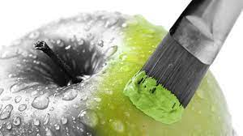
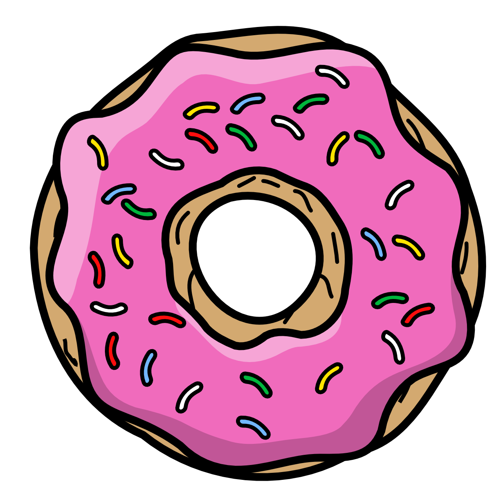

gif
El formato gif (Graphics Interchange Format) tiene como principal característica las imágnes animadas o en movimiento, pero su paleta de colores sólo está compuesta por 256 de éstos.

jpg o también conocido como jpeg (Joint Photographic Experts Group) se caracteriza porque las imágenes en este formato son imágnes comprimidas y mantienen una muy buena calidad.
Este es un formato que también comprime las imágenes sin perdida de calidad, las imágenes con este formato no tienen derechos de autor, y otra cualidad es que este formato tiene la posibilidad de transparencia en las imágnes.
El formato gif (Graphics Interchange Format) tiene como principal característica las imágnes animadas o en movimiento, pero su paleta de colores sólo está compuesta por 256 de éstos.
webp es un formato no muy conocido pero muy eficaz, puede usarse tanto como para imágenes animadas como no animadas, al igual que jpg y png, el formato webp comprime imágnes con y sin pérdida de calidad, pero webp tiene una mejor compresión que los dos anteriores.
svg (Scalable Vector Graphics), este formato tampoco es muy conocido, su principal característica es que respecto a otros formatos de imagen en mapa de bitsson muy elevadas: calidad, nitidez de imagen y reducción de peso.